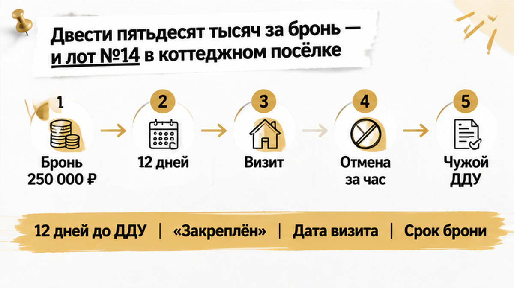
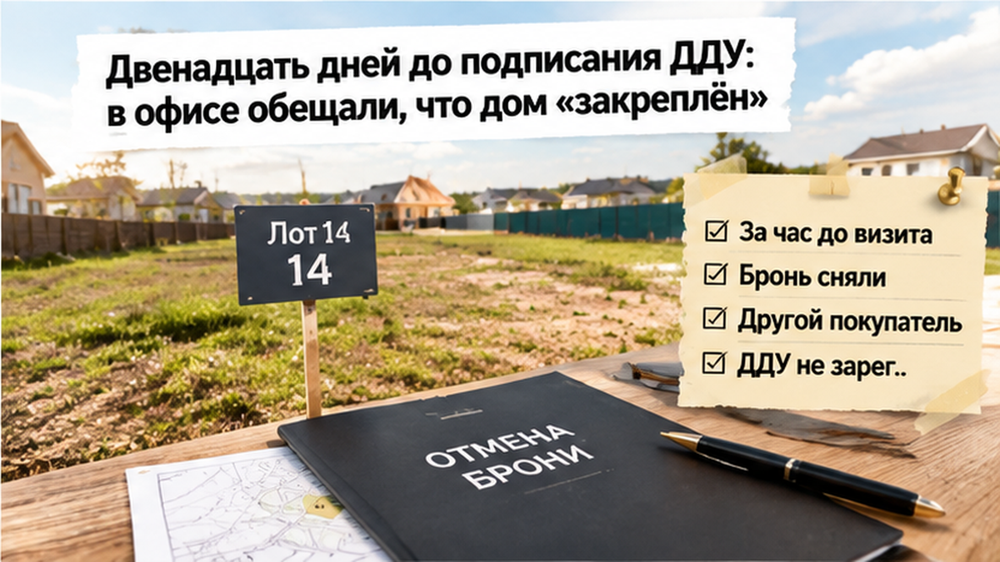
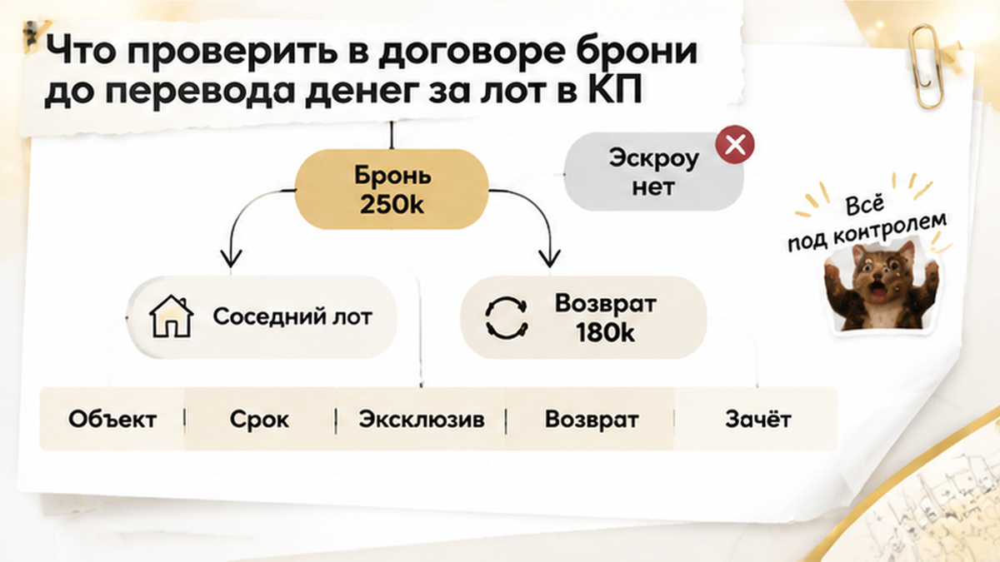

Семья внесла 250 000 ₽ за бронь дома в коттеджном посёлке под Тюменью — и за час до подписания ДДУ потеряла выбранный лот: его оформили на другого покупателя. Дом выбирали для себя и детей, а после оплаты готовились к подписанию ДДУ. В офисе успокаивали: «Дом закреплён». Покупатели услышали в этом понятное обещание: можно спокойно проверять документы, объект подождёт. Но между словом «закреплён» и обязанностью компании действительно держать дом за семьёй оказался зазор — и именно его нужно было проверить до перевода денег.
Я Святослав Шакин, The Риэлтор, Тюмень. Расскажу изнутри, где заканчивается уверенный голос менеджера и начинается защита покупателя. Разборы новостроек и коттеджных посёлков — в Telegram и MAX.

Семья выбрала конкретный дом от застройщика. Не похожую планировку, а определённый лот. Деньги внесены, дата сделки назначена. Обычный покупатель на этом месте выдыхает. Профи открывает договор бронирования.
Платная бронь не даёт той же защиты, что зарегистрированный ДДУ. Она может обязывать компанию временно удерживать объект, но эту обязанность нужно найти в тексте. Сам перевод денег не объясняет, что компания пообещала взамен.
Первый вопрос у меня простой: «За что платим?» За аванс в счёт цены дома или за отдельную услугу резервирования? Сумма одна, а последствия несостоявшейся сделки могут различаться. Порядок возврата, основания удержания и зачёт в цену читаем до оплаты.
Второй вопрос: «Какой именно объект держим?» Сверяю номер лота, участок, площадь и описание дома в брони, проекте ДДУ и проектной декларации. Для малоэтажного комплекса сведения о строительстве, сетях и сроках проверяются в ЕИСЖС. План посёлка не заменяет документы. Если обозначения отличаются, прошу письменно объяснить соответствие: покупатель не должен угадывать, какой дом скрывается за номером на схеме.

До подписания семье отвели двенадцать дней. Покупатели готовились к сделке, а тот же лот тем временем рассматривал частный инвестор. При этом менеджер говорил, что выбранный дом закреплён за семьёй.
Здесь расходятся бытовой смысл и договорный. «Нас записали на подписание» не означает «компания обязалась никому больше не продавать». Дата визита сама по себе не устанавливает срок брони.
Я бы задал офису вопросы письменно: «До какой даты действует резерв? Где в договоре срок, в течение которого лот не продают иным клиентам? Что будет с деньгами, если объект передадите не нам?» Не ради конфликта. Ради ответа, на который можно опереться.
Отдельно проверил бы условия отказа самой семьи. Обязательства должны быть понятны с обеих сторон, а не только в части того, сколько покупатель потеряет, если передумает.
Похожий разрыв уже разбирал в истории, где в брони обещали собственность на землю, а в проектной декларации была аренда. Принцип тот же: сначала сопоставляем документы, потом принимаем решение по словам менеджера.
Семья готовилась ехать на подписание. Вместо встречи — известие: бронь снята, другой покупатель уже подписал ДДУ на выбранный дом. В переписке осталось «закреплён». Но переписка и оформленная сделка — разные опоры.
Обычный покупатель спрашивает: «Как так, мы же заплатили?» Я бы начал с другого: «На каком основании прекратили бронь и что оформлено с новым покупателем?» Это способ понять, за что теперь можно бороться.
Подписанный ДДУ и зарегистрированный ДДУ — не одно и то же. Договор долевого участия считается заключённым после государственной регистрации.
Первым делом я бы письменно запросил дату и основание прекращения брони, сведения о подписании и регистрации документов по дому, сумму и срок возврата. Вместо ответа «лот уже продан» нужны документы и последовательность действий.
Дальше — сверка объекта. Номер участка, площадь, характеристики дома и обозначение в будущем ДДУ сопоставляем с проектной декларацией в ЕИСЖС на наш.дом.рф. В переписке может стоять торговый номер, а в документах — другой идентификатор.
У офиса продаж бывают процедурные сроки. Если документы на регистрацию первого ДДУ не поданы в течение шестидесяти дней, предусмотрено повторное направление проектной декларации в уполномоченный орган. Но спешка продавца не создаёт покупателю права на дом и не объясняет снятие резерва.
Если объект уже передан другому покупателю и право зарегистрировано, вернуть его бывает сложнее, чем взыскать деньги. В определении Верховного суда от 29 июня 2026 года № 67-КГ26-3-К8 по спору о двойной продаже рассматривается этот узел: требования могут сместиться к убыткам с застройщика по статье 398 ГК РФ. Это не готовый приговор по нашей брони — обстоятельства нужно сопоставлять.
Семье предложили выбор: соседний лот с доплатой 680 000 рублей либо частичный возврат — 180 000 рублей. Компания оставляла у себя 70 000.
«Может, доплатить, чтобы не потерять хотя бы это?» Понятная мысль. Но так спорная сумма начинает управлять гораздо более дорогим решением. Удержание и покупку другого дома нужно разбирать отдельно.
Прежде чем принимать замену, стоило проверить условия возврата. Что оплачено: аванс в счёт дома или самостоятельная услуга резервирования? Какая обязанность была у компании и исполнена ли она?
Надпись «невозвратная бронь» спор не заканчивает. При отказе потребителя от услуги статья 32 закона о защите прав потребителей предусматривает оплату фактически понесённых исполнителем расходов. Применять её нужно с учётом природы договора: для аванса, оказанной услуги и нарушения обязательств продавцом основания требований могут различаться.
Я бы запросил расчёт удержания, подтверждающие документы и акт об оказании услуги, если компания на него ссылается. Подробнее — в материале о брони дома и обещанных сроках подключения газа.
Соседний участок — новая проверка, а не замена номера. За что доплата: площадь, земля, коммуникации, готовность? В предложении нужны полная цена, зачёт прежнего платежа, конкретный объект, срок резерва и последствия, если ДДУ не зарегистрируют.
На этом развилка истории и остаётся: более дорогой дом или спор о возврате. Автоматически соглашаться на доплату не стоит. Но и обещать полный возврат без договора нельзя. Сначала выясняем, кто что обязался сделать, затем выбираем следующий шаг.
Что выбрать покупателю: доплатить за соседний лот или забрать деньги и уйти, если за час до ДДУ дом отдали другому?
В этой истории эскроу не открывали. Деньги за резерв и деньги на эскроу — разные платежи, с разными основаниями и защитой.
Покупатель слышит: «Дом ваш, осталось подписать». Я смотрю иначе: что именно компания обязалась сделать за полученные деньги? Удерживать конкретный объект? Запретить продажу третьим лицам на срок брони? Или оказать услугу резервирования, которую по тексту уже считают выполненной?
Бронь может устанавливать обязательства продавца, но не заменяет зарегистрированный ДДУ и не даёт автоматического права получить именно этот дом. До ДДУ покупатель тоже не остаётся без прав: значение имеют договор бронирования, переписка, платёжные документы и действия сторон.
Для малоэтажного жилого комплекса я сверяю сведения в ЕИСЖС: дом, участок, сети, сроки строительства. Не только картинку и номер на схеме продаж. Если в брони одно, а в декларации другое — это отдельный стоп-сигнал, не «мелочь офиса».
Обычный подход: «Менеджер подтвердил — можно готовиться к переезду». Профессиональный: «Покажите срок резерва, обязательство продавца и последствия нарушения». Обещание должно выдерживать проверку договором.
Прислали бронь на дом под Тюменью, а условия возврата непонятны? Напишите мне, Святославу Шакину, в Telegram или MAX. Начнём с того, за что вы платите и что обязуется сделать продавец.
Вместо «куда переводить?» сначала прошу договор, проект будущего ДДУ и документы по объекту. Читать их лучше без менеджера, который ждёт решения через стол.
С возвратом нет универсального правила «всё удержат» или «всё обязаны отдать». При отказе потребителя от услуги важны в том числе положения статьи 32 закона о защите прав потребителей и подтверждённые расходы исполнителя. Нарушение обязательства продавцом требует отдельной оценки. Сначала определяем основание платежа и причину несостоявшейся сделки.
Такой разбор есть и в истории, где газ обещали в 2026 году, а в декларации стоял 2028-й. Обещание коммуникаций и условия возврата проверяем вместе с документами на дом.

Кто принимает деньги? Если бронь оформляет одна компания, платёж получает другая, а стороной ДДУ будет третья, прошу письменно объяснить связь и основания. Само различие не доказывает нарушение, но требует проверки.
Потом смотрю ограничения на расторжение и передачу прав: где установлены, к какому договору относятся, какие последствия предусмотрены. Подробнее — в разборе о запрете перепродажи прав в новостройке.
Предложили другой дом? Проверяем заново: участок, площадь, комплектацию, сети, сроки и цену. «Соседний» не означает «тот же самый».
На «сегодня последний шанс» отвечаем спокойно: «Пришлите договор. Вопросы зафиксируем письменно». Проверка брони до перевода крупной суммы дешевле спора о потерянном лоте. Моя работа как риэлтора — подключаться именно здесь, пока у покупателя остаётся выбор, а не только требование вернуть деньги.